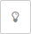

<!--
* module node-red-contrib-stm32cubemonitor
* Copyright(c) 2019 STMicroelectronics
-->
<link rel="stylesheet" href="select2/css/select2.min.css" />
<script src="select2/js/select2.min.js"></script>

<!-- Definition acquisition out node  -->
<script type="text/javascript">
(function() {
  let tooltip;
  RED.nodes.registerType('acquisition out', {
    category: "STMicroelectronics",
    color: '#3cb4e6',
    defaults: {
      name: { value: "", required: true },
      probeconfig: { value: "", type: "probe" }
    },
    inputs: 1,
    outputs: 0,
    align: 'right',
    icon: "bridge.png",
    label: function () {
      return this.name || "acquisition out";
    },
    paletteLabel: 'acq stlink out', 
    oneditprepare: function () {
      RED.popover.tooltip($("#blink-button"), "Identify the probe by blinking its led")
      tooltip = RED.popover.tooltip($("#node-input-lookup-probeconfig"), "Create a new probe config or modify the selected one")
      $("#blink-button").on("click", () => {
        let id;
        RED.nodes.eachConfig(cn => {if (cn.id === $("#node-input-probeconfig").val()) {
          id=cn.probeid;
        }});
        if (id) {
        $.ajax({
            url: "blink/"+id,
            type: "GET",
            success: function (res) {
              if (res.status) {
                RED.notify("Led is blinking on stLink");
              } else {
                RED.notify("Led not blinking ("+res.err+")")
              }
            },
            error: function (jqXHR, textStatus, errorThrown) {
              RED.notify("Unexpected error", "error");
            }
          });
        }
      });
      $("#node-input-lookup-probeconfig").on("click", () => {
          tooltip.close(true);
        });
      $("#node-input-probeconfig").change(function () {
        if ($("#node-input-probeconfig").val() ==="_ADD_") {
          $("#blink-button-container").hide();
        } else {
          $("#blink-button-container").show();
        }
      });
    },
  });
})();
</script>

<script type="text/x-red" data-template-name="acquisition out">
    <div class="form-row node-input-probeconfig">  
        <label for="node-input-probeconfig"><i class="fa fa-random"></i> Probe Config</label>
        <input type="text" id="node-input-probeconfig">
        <div id="blink-button-container" style="display:inline-block; position: relative; height:20px">
          <a href="#" id="blink-button" class="red-ui-button" style="position: absolute;top: 0px;left:2px;width:32px;"><i class="fa fa-lightbulb-o"></i></a>
        </div>
    </div>
    <div class="form-row">
        <label for="node-input-name"><i class="icon-tag"></i> Name</label>
        <input type="text" id="node-input-name" placeholder="Name">
    </div>
</script>

<script type="text/x-red" data-help-name="acquisition out">
    <p>Allow to define and/or select a probe configuration (probe name, protocol and frequency), open and close the connection and send commands to the selected probe. </p><br>
    <h3>Properties</h3>
    <dl class="message-properties">
      <dt>Probe Config<span class="property-type">probe configuration</span></dt>
      <dd>This property allows to define and/or select a probe configuration (probe name, protocol and frequency )</dd>
      <dd>The  button could be used to identify the connected probe by making its LED blinked.</dd>
      <dt>Name<span class="property-type">string</span></dt>
      <dd>Name of the node in the flow, "acquisition out" if empty.</dd>
    </dl><br>
    <h3>Input</h3>
    <p>Each input msg will need a <code>topic</code> and a <code>payload</code> to be processed </p>
    <dl class="message-properties">
        <dt>topic<span class="property-type">string</span></dt>
        <dd>The <code>topic</code> possible values are 
            <ul>
                <li><code>read</code> to send a command of one shot read</li>
                <li><code>start</code> to send a command to START acquisition</li>
                <li><code>stop</code> to send a command to STOP acquisition</li>
              </ul>
        </dd>
        <dt>payload<span class="property-type">object</span></dt>
        <dd>The <code>payload</code> is an object representing the variables group configuration defined in the variables node. The payload
          object holds several properties summarizing what have been set in the configuration panel of the variables node.
          <ul>
            <li><code>groupname</code> string</li>
            <li><code>variablelist</code> array of variable</li>
            <li><code>mode</code>string </li>
            <li><code>frequency</code>number (0 for sequential loop)</li>
            <li><code>accesspoint</code>number</li>
          </ul>
        </dd>
      </dl><br>
    <h3>Details</h3>
    <p>The acquisition out node is designed to be typically front linked with one or several variables nodes</p>
    
</script>


<!-- Definition acquisition in node  -->
<script type="text/javascript">
(function() {
  let tooltip;
  RED.nodes.registerType('acquisition in', {
    category: "STMicroelectronics",
    color: '#3cb4e6',
    defaults: {
      name: { value: "", required: true },
      probeconfig: { value: "", type: "probe" }
    },
    inputs: 0,
    outputs: 2,
    align: 'left',
    icon: "bridge.png",
    label: function () {
      return this.name || "acquisition in";
    },
    paletteLabel: 'acq stlink in', 
    outputLabels: ["data","error"],
    oneditprepare: function () {
      RED.popover.tooltip($("#blink-button"), "Identify the probe by blinking its led");
      tooltip = RED.popover.tooltip($("#node-input-lookup-probeconfig"), "Create a new probe config or modify the selected one");
      $("#blink-button").on("click", () => {
        let id;
        RED.nodes.eachConfig(cn => {if (cn.id === $("#node-input-probeconfig").val()) {
          id=cn.probeid;
        }})
        if (id) {
        $.ajax({
            url: "blink/"+id,
            type: "GET",
            success: function () {
              RED.notify("Led is blinking on stLink");
            },
            error: function (jqXHR, textStatus, errorThrown) {
              RED.notify("Unexpected error", "error");
            }
          });
        }
      });
      $("#node-input-lookup-probeconfig").on("click", () => {
        tooltip.close(true);
      });
      $("#node-input-probeconfig").change(function () {
        if ($("#node-input-probeconfig").val() ==="_ADD_") {
          $("#blink-button-container").hide();
        } else {
          $("#blink-button-container").show();
        }
      });
    }
  });
})();
</script>

<script type="text/x-red" data-template-name="acquisition in">
    <div class="form-row node-input-probeconfig">  
        <label for="node-input-probeconfig"><i class="fa fa-random"></i> Probe Config</label>
        <input type="text" id="node-input-probeconfig">
        <div id="blink-button-container" style="display:inline-block; position: relative; height:20px">
          <a href="#" id="blink-button" class="red-ui-button" style="position: absolute;top: 0px;left:2px;width:32px;"><i class="fa fa-lightbulb-o"></i></a>
        </div>
    </div>  
    <div class="form-row">
        <label for="node-input-name"><i class="icon-tag"></i> Name</label>
        <input type="text" id="node-input-name" placeholder="Name">
    </div>

</script>

<script type="text/x-red" data-help-name="acquisition in">
    <p>Allow to define and/or select a probe configuration (probe name, protocol and frequency), and receive data from the selected probe.</p><br>
    <h3>Properties</h3>
    <dl class="message-properties">
      <dt>Probe Config<span class="property-type">probe configuration</span></dt>
      <dd>This property allows to define and/or select a probe configuration (probe name, protocol and frequency )</dd>
      <dd>The  button could be used to identify the connected probe by making its LED blinked.</dd>
      <dt>Name<span class="property-type">string</span></dt>
      <dd>Name of the node in the flow, "acquisition in" if empty.</dd>
    </dl><br>
    <h3>Output</h3>
    <p>Two outputs are defined, one port labelled <code>data</code> for the measurement and one labelled <code>error</code> </p>
    <p>The <code>error</code> output <code>msg.payload</code> is the error message string, the <code>msg.topic</code> defines the error level</p>
    <p>The <code>data</code> output <code>msg.payload</code> is an object representing the variable measurements done at specific intervals. </p>
    <dl class="message-properties">
      <dt>payload<span class="property-type">object</span></dt>
      <dd>The payload object holds several properties:
        <ul>
          <li><code>first</code> boolean, true when this is the first measurement after a start.</li>
          <li><code>groupname</code> string, the name of the 'variable group' these measurements are referring to.</li>
          <li><code>data</code> array of array of duplets
            <ul>Each array of duplets is referring to a variable. Each duplet represents the result of a single target memory read.
              <li><code>x</code> number, representing the timestamp</li>
              <li><code>y</code> number, representing the read value in memory target</li>
            </ul>
          </li>
        </ul>
      </dd>
    
    </dl>
    <p>The following example shows an output <code>msg</code> for an acquisition in node:</p>
    <pre>
      {
        "payload": {
          "data": [
            [
              {
                "y": 0,
                "x": 1560850927936
              }
            ],
            [
              {
                "y": 0,
                "x": 1560850927936
              }
            ],
            [
              {
                "y": 463,
                "x": 1560850927936
              }
            ],
            [
              {
                "y": 2048,
                "x": 1560850927936
              }
            ],
            [
              {
                "y": 78,
                "x": 1560850927939
              }
            ]
          ],
          "first": false,
          "groupname": "nv_group2"
        }
      }
    </pre><br>

    <h3>Details</h3>
    <p>The acquisition in node is designed to be typically back linked with one or several processing nodes</p>
    
</script>

<!-- Definition probe config node  -->

<script type="text/x-red" data-template-name="probe">
  <div class="form-row" id="nickname">
    <label for="node-config-input-nickname"><i class="fa fa-id-card-o"></i> Name</label>
    <input type="text" id="node-config-input-nickname">
  </div>
  <div class="form-row" id="probeid">
    <label for="node-config-input-probeid"><i class="fa fa-random"></i> Probe</label>
    <select class="js-data-example-ajax" type="text" id="node-config-input-probeid"></select>
    <input type="hidden" id="node-config-input-probename">
    <input type="hidden" id="node-config-input-probeproperty">
  </div>

  <div class="form-row" id="protocol">
    <label for="node-config-input-protocol"><i class="fa fa-dot-circle-o"></i> Protocol</label>
    <select class="js-example-basic-single" type="text" id="node-config-input-protocol"></select>
  </div>

  <div class="form-row" id="frequency">
    <label for="node-config-input-frequency"><i class="fa fa-bolt"></i> Frequency</label>
    <select class="js-example-basic-single" type="text" id="node-config-input-frequency"></select>
  </div>

  <div class="form-row" id="probeversion">
    <input style="height:16px!important; width: 95%" class="form-tips" id="node-config-input-probeversion">
  </div>
</script>

<script type="text/x-red" data-help-name="probe">
    <p>Allow to define a probe configuration : probe name, protocol and frequency </p>
    
    <p>If no probe is detected, it may be a driver issue or another software using the probe. 
      Please see the <a target="_blank" href="https://wiki.st.com/stm32mcu/wiki/STM32CubeMonitor:Troubleshooting">wiki</a>
      for more information.</p>
    <br>
    <h3>Properties</h3>
    <dl class="message-properties">
      <dt>Probe Name<span class="property-type">string</span></dt>
      <dd>Allow to select a specific probe among all connected probes </dd>
      <dt>Protocol<span class="property-type">string</span></dt>
      <dd>Allow to select a protocol among the protocols supported by the selected probe</dd>
      <dt>Frequency<span class="property-type">string</span></dt>
      <dd>Allow to select a frequency among the frequency supported by the selected probe</dd>
    </dl><br>
    <dd>STlink firmware version : information regarding the STlink Firmware version currently used by the selected probe.
      Main features missing depending on STlink Firmware version:
      <ul>
        <li><code>Blink LED</code> New in ST-Link/V2 from version J28</li>
        <li><code>TCP Support</code> New in ST-Link/V2 from version J28</li>
        <li><code>Read Memory 16 bits</code> New in ST-Link/V2 from version J26</li>
        <li><code>Write Memory 16 bits</code> New in ST-Link/V2 from version J26 </li>
        <li><code>Set JTAG frequency</code> New in ST-Link/V2 from version J24</li>
        <li><code>Set SWD frequency</code> New in ST-Link/V2 from version J20</li>
        <li><code>Get Last Read Write Status</code> New in ST-Link/V2 from version J15</li>
      </ul>
    </dd>
</script>


<script type="text/javascript">
  RED.nodes.registerType('probe', {
    category: 'config',
    defaults: {
      probeid: { value: "", required: true },
      probename: { value: "", required: true },
      protocol: { value: "", required: true },
      frequency: { value: "", required: true },
      probeproperty: { value: "", required: true },
      probeversion: { value: "", required: true },
      connectionType: { value: "p2p", required: true },
      nickname: { value: "", required: false }
    },

    label: function () {
      return this.nickname || this.probename|| "probe"; 
    },
    oneditprepare: function () {
      let currentprobelist;
      let currentprobeproperty;
      let currentprobeversion;
      let loadedprotocol = this.protocol;
      let loadedfrequency = this.frequency;
      let defaultfrequency;
      const ST_LINK_MIN_VERSION = 2;
      const JTAG_MIN_VERSION = 28;
      const node = this;


      function setFirmwareVersionListener() {
        $("#node-config-input-probeversion").change(function (e) {
          if (currentprobeversion && currentprobeversion.STLinkVersion <= ST_LINK_MIN_VERSION && currentprobeversion.JTAGVersion < JTAG_MIN_VERSION) {
            RED.notify(node._("ST Link firmware version V" + currentprobeversion.STLinkVersion + ".J" + currentprobeversion.JTAGVersion + " not up to date, please update your firmware to ensure full features support"), "info");
          }
        });
        $("#node-config-input-probeversion").trigger('change');
      }

      if (this.probeid) {
        $("#node-config-input-probeid").append(`<option value=${this.probeid} selected>${this.probename}</option>`);
        currentprobeproperty = JSON.parse(this.probeproperty);
        //check if the firmware version is updated since last time 
        $.get("getprobestlink", function (data, status) {
          currentprobelist = $.map($.makeArray(data.list), function (obj) {
            obj.text = obj.text || obj.probeName;
            obj.id = obj.id || obj.probeId;
            return obj;
          });
          if (currentprobelist) {
            let accurateprobedata = currentprobelist.find(function (e) {
              return (e.id === $("#node-config-input-probeid").val());
            });
            if (accurateprobedata) {
              currentprobeversion = accurateprobedata.version;
              $("#node-config-input-probeversion").val("ST Link firmware version V"+currentprobeversion.STLinkVersion + ".J" + currentprobeversion.JTAGVersion);
            }
          };
          setFirmwareVersionListener();
        });
      } else {
        $("#protocol").hide();
        $("#frequency").hide();
        $("#probeversion").hide();
        $("#connecttype").hide();
        $("#node-config-dialog-ok").button("option", "disabled", true);
        setFirmwareVersionListener();
      }

      $("#node-config-input-probeid").select2({
        placeholder: "Select a probe",
        minimumResultsForSearch: -1,
        ajax: {
          url: "getprobestlink",
          type: "GET",
          processResults: function (data) {
            currentprobelist = $.map($.makeArray(data.list), function (obj) {
              obj.text = obj.text || obj.probeName;
              obj.id = obj.id || obj.probeId;
              return obj;
            });
            if (!data.updated) {
              RED.notify(node._("Probe list not updated due to acquisition on going"), "warning");
            }
            return { results: currentprobelist };
          }
        }
      });
      $("#probeid>span")[0].style.width = "calc(100% - 110px)";
      $("#node-config-input-probeid").change(function (e) {
        if (currentprobelist != null) {
          $("#node-config-input-probename").val($("#node-config-input-probeid option:selected").text());
          currentprobeproperty = currentprobelist.find(function (e) {
            return (e.id === $("#node-config-input-probeid").val());
          }).property;
          $("#node-config-input-probeproperty").val(JSON.stringify(currentprobeproperty));
          currentprobeversion = currentprobelist.find(function (e) {
            return (e.id === $("#node-config-input-probeid").val());
          }).version;
          $("#node-config-input-probeversion").val("ST Link firmware version V"+currentprobeversion.STLinkVersion + ".J" + currentprobeversion.JTAGVersion).trigger('change');
        }
        if (currentprobeproperty != null) {
          $("#node-config-input-protocol").empty();
          $("#node-config-input-protocol").select2({
            minimumResultsForSearch: -1,
            data: Object.keys(currentprobeproperty)
          })

          if (loadedprotocol) {
            $("#node-config-input-protocol").val(loadedprotocol);
            loadedprotocol = null;
          } else {
            $("#node-config-input-protocol").trigger('change');
          }

          $("#node-config-dialog-ok").button("option", "disabled", false);
          $("#protocol").show();
          $("#frequency").show();
          $("#connecttype").show();
          $("#probeversion").show();
          $("#protocol>span")[0].style.width = "calc(100% - 110px)";
        }
      });

      $("#node-config-input-connectionType").change(function (e) {
        if (e.target.value === "tcp") {
          $("#tcp-warning").show();
        } else {
          $("#tcp-warning").hide();
        }
      })
      $("#node-config-input-protocol").change(function (e) {
        if (currentprobeproperty != null) {
          $("#node-config-input-frequency").empty();
          $("#node-config-input-frequency").select2({
            minimumResultsForSearch: -1,
            data: currentprobeproperty[$("#node-config-input-protocol").val()]
          });
          defaultfrequency=null;
          $('#node-config-input-frequency option').each(function () {
            if ($(this).text().includes('Default')) {
              defaultfrequency = $(this).val();
            }
          });

          if (loadedfrequency) {
            $("#node-config-input-frequency").val(loadedfrequency);
            loadedfrequency = null;
          } else if (defaultfrequency) {
            $("#node-config-input-frequency").val(defaultfrequency).trigger('change');
          }
          $("#frequency>span")[0].style.width = "calc(100% - 110px)";
        }
      });
    },
  })
</script>
